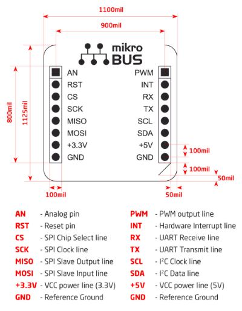

2016-04-14 - Nº 50

Editorial
Aqui está a Newsletter Nº 50 no seu formato habitual. Agora às quintas-feiras. Se gostar da Newsletter partilhe-a!
Todas as Newsletters encontram-se indexadas no link.
Esta Newsletter tem os seguintes tópicos:
Esta semana a SpaceX conseguiu aterrar com sucesso o seu foguetão numa embarcação no meio do mar. Esta foi a terceira tentativa e a primeira que teve sucesso. Trata-se de um avanço para desenvolver um foguetão de baixo custo e eficiente. Pela primeira vez um homem tetraplégico conseguiu usar a sua mão para pegar em objectos usando apenas o pensamento. Trata-se de um progresso tremendo nesta aérea que permitirá melhorar a qualidade de vida das pessoas com este tipo de problemas. Através de um microchip implantando no cérebro são captados os impulsos cerebrais que são depois convertidos em sinais eléctricos para estimular os músculos, substituindo a espinal medula que se encontra danificada.
Na Newsletter desta semana apresentamos diversos projetos de maker, iremos ver na secção de gadgets uma placa da microchip designada por MPLAB Xpress Evaluation Board e usaremos um IDE/Web para programá-la. Na rubrica "Documentação" apresentamos seis livros (eBooks) que podem ser descarregados livremente e que esta semana são sobre Serviços Web REST, Desenvolvimento de Bases de Dados contendo dados temporais, uma Introdução menos curta do LaTeX, um guia do Jenkins, o guia Rook para C++ e Reverse Engineering para iniciados. Falamos também da revista newelectronics de 12 de Abril.
 João Alves ([email protected])
João Alves ([email protected])
O conteúdo da Newsletter encontra-se sob a licença  Creative Commons Attribution-NonCommercial-ShareAlike 4.0 International License.
Creative Commons Attribution-NonCommercial-ShareAlike 4.0 International License.
Novidades da Semana ^
Why the SpaceX Rocket Ocean Landing is a Big Deal
"When a SpaceX Falcon rocket flew itself back to its Florida launch site last December, the feat was hailed as a key step in company founder Elon Musk’s quest to develop an inexpensive, reliable reusable rocket. But that was just half the story. SpaceX is gearing up to launch Discovr, which will keep an eye on both the weather in space and the goings on with our home planet. The more challenging and potentially revolutionary step was accomplished on Friday when another Falcon rocket dispatched a cargo ship to the International Space Station, then turned around and landed on a platform gently bobbing in the Atlantic Ocean."
How a paralyzed man moves his hand – with his mind!
"A man paralyzed from the neck down for six years now can use his hand to pour liquids and hold a phone, just by thinking about it. The increasingly complex movements by 24-year-old Ian Burkhart, using new technology, provide the first tangible hope for people with paralysis, Ohio State doctors say. The clinical trial at The Ohio State University Wexner Medical Center was detailed in a study published online April 13 in the journal Nature."
Ciência e Tecnologia ^
Eternal 5D data storage could record the history of humankind
"Scientists at the University of Southampton have made a major step forward in the development of digital data storage that is capable of surviving for billions of years. Using nanostructured glass, scientists from the University’s Optoelectronics Research Centre (ORC) have developed the recording and retrieval processes of five dimensional (5D) digital data by femtosecond laser writing. The storage allows unprecedented properties including 360 TB/disc data capacity, thermal stability up to 1,000°C and virtually unlimited lifetime at room temperature (13.8 billion years at 190°C ) opening a new era of eternal data archiving. As a very stable and safe form of portable memory, the technology could be highly useful for organisations with big archives, such as national archives, museums and libraries, to preserve their information and records."
A metal that behaves like water
"Since its discovery a decade ago, scientists and tech gurus have hailed graphene as the wonder material that could replace silicon in electronics, increase the efficiency of batteries, the durability and conductivity of touch screens and pave the way for cheap thermal electric energy, among many other things. It’s one atom thick, stronger than steel, harder than diamond and one of the most conductive materials on earth. But, several challenges must be overcome before graphene products are brought to market. Scientists are still trying to understand the basic physics of this unique material. Also, it’s very challenging to make and even harder to make without impurities."
Engineers 3D-print a New Lifelike Liver Tissue for Drug Screening

"A team led by engineers at the University of California, San Diego has 3D-printed a tissue that closely mimics the human liver’s sophisticated structure and function. The new model could be used for patient-specific drug screening and disease modeling. The work was published the week of Feb. 8 in the online early edition of Proceedings of the National Academy of Sciences. Researchers said the advance could help pharmaceutical companies save time and money when developing new drugs."
Physicists at Royal Holloway solve thermoelectric 'paradox' in superconductors
"A problem that has been taxing scientists for nearly 40 years has been solved by a team of physicists at Royal Holloway, University of London. In the 1970s, scientists made a theoretical breakthrough when they predicted that measurable thermoelectric magnetic flux would be generated in loops made of superconducting material. However, a major crisis developed when the experiments began to show paradoxical discrepancies with the theory by up to several orders of magnitude. The results of the experiments were also in disagreement with each other, leading some scientists to believe the theory was incomplete."
Study Finds Only a Small Portion of Synapses May Be Active During Neurotransmission
"Columbia University scientists have developed a new optical technique to study how information is transmitted in the brains of mice. Using this method, they found that only a small portion of synapses—the connections between cells that control brain activity—may be active at any given time."
Organic Waste for Sustainable Batteries
"Researchers Develop Novel, Inexpensive, and Powerful Active Materials for Sodium-based Energy Storage Systems / Publications in Advanced Energy Materials and ChemElectroChem. A carbon-based active material produced from apple leftovers and a material of layered oxides might help reduce the costs of future energy storage systems. Both were found to have excellent electrochemical properties and stand for the environmentally compatible and sustainable use of resources. Now, these materials are presented by researchers of the Helmholtz Institute Ulm of Karlsruhe Institute of Technology in the journals “ChemElectroChem” and “Advanced Energy Materials.”"
Documentação ^
A documentação é parte essencial do processo de aprendizagem e a Internet além de artigos interessantes de explorar também tem alguma documentação em formato PDF interessante de ler. Todos os links aqui apresentados são para conteúdo disponibilizado livremente pelo editor do livro.
Livros
-
"The world of web services has been on a fast track to supernova ever since the architect astronauts spotted another meme to rocket out of pragmatism and into the universe of enterprises. But, thankfully, all is not lost. A renaissance of HTTP appreciation is building and, under the banner of REST, shows a credible alternative to what the merchants of complexity are trying to ram down everyone’s throats; a simple set of principles that every day developers can use to connect applications in a style native to the Web. RESTful Web Services shows you how to use those principles without the drama, the big words, and the miles of indirection that have scared a generation of web developers into thinking that web services are so hard that you have to rely on BigCo implementations to get anything done. Every developer working with the Web needs to read this book."
Developing Time-Oriented Database Applications in SQL
"Anyone who has ever attempted to create or modify a database containing temporal data will appreciate the complexity of the task. Snodgrass's book aims to simplify it by first helping the reader fully understand the concepts involved before covering the SQL code needed to carry out the work."
The Not So Short Introduction to LATEX 2ε
"If you want to learn how to write your documents with LaTeX, this introduction is for you. It is not about setting up a LaTeX system. While it is not as comprehensive as Lamport's book, it should be sufficient in most cases."
-
"Continuous Integration, or CI, is a cornerstone of modern software development best practices. Jenkins, an Open Source Continuous Integration tool, is by far the most popular Continuous Integration tool on the market, and for good reason! It's intuitive user interface and powerful features make setting up a Continuous Integration service a real breeze. This book will teach you how to build a powerful and robust CI infrastructure using Jenkins. It is both a tutorial-style introduction and a comprehensive reference to implementing Continuous Integration and automating the build process with Jenkins. It's intention is not only to describe and document Jenkins, but also to provide a wealth of best practices and real-world tips enabling readers to get the most out of their Continuous Integration environment."
-
"This Creative Commons-licensed textbook written by Norwich University students and faculty aims to provide an introduction to the C++ programming language."
Reverse Engineering for Beginners
"There are several popular meanings of the term “reverse engineering”: 1) The reverse engineering of software: researching compiled programs; 2) The scanning of 3D structures and the subsequent digital manipulation required order to duplicate them; 3) recreating DBMS9 structure. This book is about the first meaning"
Revistas
newelectronics - 12 April 2016
"New Electronics is a fortnightly magazine focusing on technological innovation, news and the latest developments in the electronics sector. Downloadable as a digital page turner or pdf file, or offered as a hard copy, the New Electronics magazine is available in a format to suit you."
Modelos 3D ^
Com a disponibilidade de ferramentas que permitem dar azo a nossa imaginação na criação de peças 3D e espaços como o thingiverse para as publicar, esta rubrica apresenta alguns modelos selecionados que poderão ser úteis.
Parametric Box for everything
A fully parametric and 99.9% printable box with a magnetic lid.
For pencils, glasses, tools, pills, toys, milling bits, phones, components, insects, USB-sticks, Tesa, sewing cotton, batteries, dust, TEK 7000 plugins, eggs, nerf darts, butter cookies, drills, motors, transistors, toy cars, cables, in-ear phones, plugs, brains, bass strings, knobs, spoons, small vise collections, watches, chewing gum, lenses, tapes, magnets, fingers, lasers, and, and, and...
Project: Pulley systems
To demonstrate how simple and multiple chain hoist/pulley block work we need to have one or more pulleys. A functional single or multiple pulley is the result of this project. It can demonstrate the transmission of forces and weights in physics. During the design and construction process, the use of basic 3D geometry has been used.
To create the pulley, which consists of three parts, the addition and subtraction of basic geometric shapes has been used. The pulley wheel is formed by a cylinder and torus subtracted from it. Pin wheel consists of the addition and subtraction of cylinders and the pulley housing is formed by a cutaway cylinder, from which other cylinders and cubes are subtracted. To create a multiple pulley, the number of wheels of the pulley can be set parametrically All parts are designed for 3D printing.
Storage Tray Maker (Customizable, OpenSCAD)
OpenSCAD module/library to simplify the design of rectangular shaped compartment trays.
The tray is defined via an ASCII art method , and combined with sizing parameters, a custom compartmentalized tray is generated.
Need a lid? No problem, with the same tray layout parameters and a few extra values to designate a lid, your things will be secured in your tray even when flipped upside down. The lid will need to be generated separately.
I have used this to organize some items, and also organize board game components.
See the tray layout instructions attachment/image to understand how to design your custom tray.
Gadget em Destaque ^
Vamos analisar um gadget.
MPLAB® Xpress Evaluation Board
O Gadget da semana é uma placa de desenvolvimento feita pela Microchip desenvolvida para demonstrar as capacidades do MPLAB Xpress Cloud-based IDE.
Esta placa vem equipada com um PIC16F18855 de 8-bits, uma porta USB, LEDs, um botão de pressão e um potenciómetro. Pode-se aceder aos pinos do MCU através de headers presentes na placa.
O Micro-controlador tem as seguintes características:
- VDD de 1.8 a 5.5 V
- 14 KBytes de Flash
- 1024 Bytes RAM
- 256 Bytes EEPROM
- Oscilador Interno ajustável entre 1 e 32 MHz
- PWM de 10-bits (2)
- UART (1)
- SPI (2)
- I2C (2)
- Timers (5) - 4 timers de 16-bits e 1 de 8-bits
- ADC de 10-bits com 24 canais
- DAC de 5-bits
A Placa em si além do micro-controlador dispõe dos seguintes componentes:
- Um PIC18LF25K50 para o interface USB e para a programação
- 4 LEDs vermelhos
- 1 Potenciómetro
- 1 botão de pressão
- header mikro BUS - Spec
O header tem a seguinte configuração:

Quando a placa foi ligada quer no Linux quer no Windows aparece mapeada uma nova drive. Nessa drive está um ficheiro - README.HTM que ao abrir-se nos leva para o site mplab-xpress da Microchip. Para se reprogramar a o micro-controlador basta copiar o ficheiro .HEX que é gerado pela plataforma para esta drive para a programação ser feita.
Depois de proceder ao processo de registo na plataforma podemos iniciar a programação.
Neste interface vamos fazer o primeiro teste com esta placa.
Escolher a opção File - New Project - Microchip Examples - Hello World. Carregando em Next escolher a opção PIC16F18855 no Dispositivo. Pode deixar-se o nome por omissão - Hello_World. Após estas operações já deverá estar populada a árvore do projecto.
Neste momento já temos um projecto pronto a ser compilado e usado. Carregar no botão Make and Program Device. Este irá compilar o programa e descarregar um ficheiro .hex. Este ficheiro pode ser colocado na drive XPRESS. Isto desencadeará a programação do PIC16F18855.
Se tudo correr bem teremos o PIC com o primeiro LED aceso (D2).
Agora iremos entrar na ferramenta MCC - MPLAB Xpress Code Configurator. Acede-se a esta ferramenta através do menu Tools - Embedded - MPLAB Xpress Code Configurator. Neste momento temos que ter o Java 8 instalado e deveremos carregar no botão "Download MCC". Este descarrega ou executa um ficheiro do tipo jnlp. Se for apenas descarregado deverá ser executado. De seguida a aplicação irá pedir um token. Deverá ser introduzido o que se encontra no Step 3. Isto irá inicializar o MCC que depois de inicializado deverá ter o seguinte aspecto:
Nesta aplicação (MCC) iremos configurar os pinos do micro-controlador que queremos usar. No nosso caso iremos usar os seguintes pinos:
- RA0 - GPIO - led1 - Output
- RA1 - GPIO - led2 - Output
- RA2 - GPIO - led3 - Output
- RA3 - GPIO - led4 - Output
Estas configurações são feitas na parte inferior direita do MCC:
Depois configura-se o modo dos pinos e o seu nome lógico:
Depois desta configuração podemos carregar no botão Generate do MCC. Responder que sim no "Warning".
Neste momento o MCC tratou de gerar um conjunto de primitivas que agora podem ser usadas na nossa aplicação (ficheiro pin_manager.h):
#define led1_TRIS TRISA0
#define led1_LAT LATA0
#define led1_PORT RA0
#define led1_WPU WPUA0
#define led1_ANS ANSA0
#define led1_SetHigh() do { LATA0 = 1; } while(0)
#define led1_SetLow() do { LATA0 = 0; } while(0)
#define led1_Toggle() do { LATA0 = ~LATA0; } while(0)
#define led1_GetValue() RA0
#define led1_SetDigitalInput() do { TRISA0 = 1; } while(0)
#define led1_SetDigitalOutput() do { TRISA0 = 0; } while(0)
#define led1_SetPullup() do { WPUA0 = 1; } while(0)
#define led1_ResetPullup() do { WPUA0 = 0; } while(0)
#define led1_SetAnalogMode() do { ANSA0 = 1; } while(0)
#define led1_SetDigitalMode() do { ANSA0 = 0; } while(0)
Estas são apenas as que foram geradas para o led1.
Nesta altura já podemos construir o nosso programa. Abrindo o main.c devemos colocar dentro do while(1) o seguinte:
while (1)
{
#define tempo 100
led1_Toggle();
__delay_ms(tempo);
led2_Toggle();
__delay_ms(tempo);
led3_Toggle();
__delay_ms(tempo);
led4_Toggle();
__delay_ms(tempo);
}
De seguida podemos compilar o código e colocar o .hex gerado na DriveXPRESS.
O efeito será vermos os leds a acender e a apagar em sequência.
Isto é apenas um pequeno exemplo do que pode ser feito com esta placa.
Conclusão
A programação feita nesta placa é "parecida" com a que é feita num IDE tradicional. Não sendo um Arduino, pode ser igualmente uma opção interessante para percebermos melhor como é que os micro-controladores funcionam, neste caso os PICs.
Links Úteis:
- Microchip Minutes Episode 3 – MPLAB® Code Configurator (MCC) Walkthrough
- MPLAB® Xpress wiki
- Frequently Asked Questions (FAQ) about C on the Microchip PIC
- Hello World - Light LED
Projetos Maker ^
Diversos Projetos interessantes.
-
"Hello everybody, at this time i will share how to make remote car toys by yourself. For those of you who need a reference as teaching materials or just a hobby, you can try at homeIt's very easy to not require any programming language. Component that is needed is a digital electronic component."
-
"When I got my 3D printer I started to think what can I make with it. I printed a lot of things but I wanted to make a whole construction using 3D printing. Then I thought about making robot animal. My first idea was to make a dog or spider, but a lot of people already made dogs and spiders. I was thinking about something different and then I thought about snake. I designed whole snake in fusion360, and it looked awesome so I ordered necessary parts and build one. I think that the result is great. On the video above you can see how I made it or you can reed about it below."
Chasis de Robot con Orugas Impresas en 3D
"This is the first step to build a robot tank (by chain traction, no weapons). Open source, and in order that it can be used in all kinds of applications, such as education, design experimentation and exploration."
Home made Solar Tracker using Arduino uno R3
"This is a dream of every student to make something new and interesting so today i am going to show you that how to make arduino based solar tracker. Every one knows that solar panel output voltage level depends upon on sun light efficiency if more light photons striking on solar panel it will produce more voltage with full efficiency but we don't know if we fixed and install the solar panel in some constant position then for some time it will receive strong light but due to change in time sun changing their position and the solar panel not receiving enough light because due to mismatch of their line of sight between sun and solar panel. Here we used Arduino uno R3 to make it possible to track the movement of sun and get the full efficiency from our solar panels."
-
"This is cheap adjustable 0-30V 3A Laboratory DC Power Supply circuit. It is high efficiency regulator circuit by using IC regulator UA723 and TIP3055 as power transistor so easy to install. It is designed to protect over current load maximum 3A"
Attiny85 Game Kit Assembly Instructions
"I have updated the Attiny85 keychain game making it easier to source and assemble. The new snap case has been updated to allow enough height for the screen header as well as a factory made CR2032 battery holder."
-
"I programmed Tetris in C. It runs on an Arduino + LCD. I worked on it for 2 Days. It was a lot of fun."
Using an ESP8266 to Control Mains Sockets Using 433mhz Transmitter and Receiver
"In this Instructable I will show how to control a main socket using a 433mhz transmitter and receiver. I started this project because I wanted to be able to switch my lamp on and off without using the remote that I already had for switching the mains sockets. So that if I was in another room and forgot to switch off the lamp I could do it from my phone using home-assistant."
A DIY Arcade Table powered by Raspberry Pi
"Gaming with emulators has been around quite awhile, but nothing brings back the nostalgia of the old arcade like playing games with a vintage joystick and those big round buttons. Like many of us, I have always dreamed of owning an original stand-up arcade machine, but the reality of it was that they are too bulky, expensive, and difficult to find. Enter Raspberry Pi and the RetroPie project - which proves that dreams can come true! The following Instructable follows in GREAT detail the steps, process, pitfalls, and learning involved in making myself the ultimate home arcade table. For each step be sure to read the notes located throughout the pictures as well - I added lots of other tips that came to mind as I reviewed them."
Multi Voltage Ardu Droid Bluetooth Controlled Indoor Gardening
"This is a multi voltage (12, 5, 3.3 V) circuit board with arduino Atmega 2560 and 8 relays that control lights and Irrigation of plants through Ardu droid Bluetooth android application"
Controlling relays with 24V coils
"Ive got a lot of relays in the parts bin with 24V coils. This is a common control voltage in industrial and telecommunications equipment, so the relays are common in surplus equipment. Many will actuate equally well on AC or DC, which makes them an easy solution when the control voltage is switched mechancially, as in the case of limit switches or magnetic reed switch sensors. Unfortunately, theyre not so simple to interface directly to microcontrollers as they require a separate supply and level shifting circuitry."
-
"A simple security system to run on a Raspberry Pi."
-
"Since I started this adventure in hardware I have wanted to get an logic analyzer. I have an older but good oscilloscope that only goes so far when it comes to digital logic signals. I could go for the Saleae, but if I am going to do that I would rather sprint for the higher end model which is an easy $400+. In the mean time I was on a quest to find a low cost option. Upon my travels of the interwebs I found a few options. There's Dangerous Prototype's bus pirate (which I have) or their openbench logic. There are also the microcontroller options using, say, a Teensy or STM32. Then when I came across the BeagleLogic, it seemed like it fit what I had in mind. And actually, if I remember correctly, I saw it during the Hackaday Prize 2015. Funny how you end up somewhere on the Internet you've been before but have long forgotten. "
-
"For some reason I always end up needing a reason to switch a mains powered device with a microcontroller so I decided to finally make a test jig with some spare parts I have lying around. Hopefully this will be much safer than having exposed mains wire floating around everywhere. :)"
-
"This project uses a Raspberry Pi, a PmodACL2, an RGB LED, a Digilent PCB Ruler, and LabVIEW MakerHub LINX in order to change the color of the LED depending on the acceleration measured. The front panel is also updated to reflect the measurements of the red, green, and blue colors as well as the expected LED color! Check out a video of the project on the Digilent Instagram!"
-
"In this project I utilize the power of Arduino to create a circuit to power a Sliding Gate. The main aim of this project is to utilize a dead Sliding gate with a functioning AC motor and automate the system using an Arduino, couple of relays, a 433MHz reciever, a 433Mhz transmitter and some crafty electrical skills. The system creates a method of powering the gate's motor when required and to decide whether to open or close the gate. The Arduino constantly listens to a set response from the transmitter, in this case it is the remote used to open or close the gate. The transmitter operates on two channels, where each channel has its on unique ID. Once this ID is recieved by the 433MHz reciever, it sends a signal to the Arduino which controls the Relays to power the motor. "
Gyroscopic Arduino Head Tracking Unit
"his is a subsystem I developed for a custom Arduino RC plane I am currently designing and building. This head tracking system is used to control the angle of an on board FPV (First Person Video) camera based on the pilot's head movement using a gyroscope."
-

"Adafruit customer Kenton Harris used a reverse geocaching box to propose to his girlfriend (she said yes). After the project build and successful proposal, he shared how he built the reverse geocache with us. We thought others may be interested in building a similar box for their own proposals, or for fun! A reverse geocaching box works similar to other geocaching devices. It will guide you to certain coordinates on earth and instead of finding a geocache located at those coordinates, you carry the box with you, and it opens for you at a predetermined destination. This is also a great way to do a scavenger hunt (making someone go to multiple locations before the box opens)."
Logic probe with PIC: LogicProbePIC
"A logic probe is not only the poor man's logic analyser but often more usable."
Swarm Bots: Assembly and Co-operative Transport
"This instructable is about 'Swarm Bots: Assembly and Co-operative Transport' in which we can build our own master and slave robot, slave will follow master robot and we will control master robot with our smartphone.It's a fun project, just try your electronics geek inside you and play with robotics.I will try many images, videos, brief explanation about this project to get clear idea."
How to Code Your Own Claw Machine
"I, along with many other people, have childhood memories of walking into a movie theater, grocery store, or arcade and seeing a large glass box filled with toys. There was always that one toy either buried or perched right on top that I wanted. All I had to do was get some money from my parents and move the claw over the toy and press the button. In my childish innocence, it seemed so simple."
Arduino 433Mhz RF Wireless Data Transfer
"The most practical and cool way of sharing data from 1 Arduino to another is by far using a radio transmitter and receiver. The simplest form of wireless transmission (I could find) is the 433Mhz ASK modules. They come in pairs, a receiver and a transmitter. They are ridiculously cheap, selling at $1 or less a pair!!"
-
"Im currently mainly working on my new anemometer design but once in a while I get distracted. For example when my Keysight E3645A lab power supply was making so much noise that I could hardly concentrate. Thats when the idea of this fan controller was born."
Using BMP180 for temperature, pressure and altitude measurements
"The BMP180 is a new generation digital barometric pressure and temperature sensor from Bosch Sensortec. In this tutorial, we will briefly review this device and describe how to interface it with an Arduino Uno board for measuring the surrounding temperature and pressure. We will also discuss about retrieving the sensor altitude from its pressure readings. - See more at: http://embedded-lab.com/blog/bmp180/#sthash.g0dtPgsF.dpuf"
-
"This project is made for the Digilent Hardware Design Contest Europe Region 2016 and it is a begginging version to our project. This instructable is designed for those who have little experience and want to build a robot with Zynq Board (ZYBO) witch contains an embedded Linux operating system. This robot will be able to bring an object from any location to another. This task needs to solve problems such as odometry, localisation, mapping, continuous communication with the user(s) and detect and handle unplanned barriers."
-
"The first picture shows a bracket schema used to hold servos together in an arm construction. The material used to build the entire skeleton is aluminium. Next picture illustrates previously mentioned aluminium brackets already bended and screwed with servos. The box on the bottom of the arm serves as a connection between the arm construction and base. This joint will be later supported with needle bearing. Thus it will got rid of a significant amount of a load that it would otherwise have to deal with."
Arduino Glass - Open Source Augmented Reality Headset
"Have you ever considered getting an augmented reality headset? Were you also wowed at the possibility of augmented reality and looked at the price tag with a broken heart? Yes, me too! But that didn't stop me there. I built up my courage and instead, decided to build my own AR headset."
-
"Since USB has become more and more a power delivery standard, it would be nice to have a convenient way to measure the power consumption these devices need. Of course there are already power meters out there, but they are just boring or don't have all the features I like."
Ultrasonic Mapmaker Using Arduino and MatLab
"Vision is one of the most exciting senses you can endow on your robot. The ability to perceive obstacles allows a robot to make an educated decision regarding further movements. However, it is also not the easiest senses to implement for a few reasons. Firstly, vision can be abstracted to a two-dimensional vector when it comes to computing, as opposed to a single dimensional scalar such as, say, temperature. Secondly, it is an analog value like many other senses, so it requires a certain degree of digitization and processing for it to make sense to a computer. Finally, though this is not strictly a problem, is visualization. Vision data cannot be represented as mere numbers to humans. Although that is how computers process data, it makes no sense for a human to decode digits. However, with the help of modern technology, and basic knowledge of physics and math, we will be able to endow our robot with the gift of sight!"
Slider controller with auto-reverse and variable speed control
"These motorized sliders share a common electronic controller design that provides speed control for the gear motor and also an auto-reverse feature using limit switches. In this article , Ill go over the electronics and software for this slider controller and show how you can build your own."
Efficient 9v to 5v Step-Down Buck converter
"In this tutorial i'll show you how to make a 9 to 5 volt DC-DC Step down buck converter very useful for powering electrinics like Arduino or microcontrollers from a 9v battery! The circuit works by converting the extra voltage into current. This means that when compared to a simple voltage regulator like LM7805 that converts the excess voltage to heat, this circuit is much more efficient - and thus more suitable for using battery as a power source."
-
"My instructable is about AVR board which I designed it by myself after doing some researches in google and watching some videos (specially Ben hack show) and decided to make this instractable. I know there is a lots of project out there but I decided to make a development board which have three type of popular AVR microcontrollers on the board and you can carry it very easy and use each of the microcontrollers when ever you want."
DIY Wireless Joystick (Wireless Gaming)
"In this instructables I will show you how you can build your own joystick using Arduino and RF transceiver. I used a joystick module and 5 buttons. Using joystick you can control mouse cursor & using buttons you can implement 5 keys of the keyboard. I implemented W, A, S, D and Space as these are the most commonly used buttons for games. You can implement your own choice. There are two units for the system, transmitter (your joystick) & receiver connected to your PC. You may use any Arduino board or standalone ATmega microcontroller for the transmitter unit but it is convenient to use Arduino Micro, Pro Micro, DUE or Leonardo for the receiver unit because all the board used 32U4 controller comes equipped with a full-speed USB transceiver. Low cost 433MHz RF transceiver was used for wireless communication."
Over Current Protection Switch
"Current Sensing Switch is designed to operate a Relay Contact when there is a DC current through the sense resistor exceeds the set point, Set point adjustable from 1A to 3Amp using on board potentiometer. This circuit can offer over current protection to your project."
-
"Recently i made shield for arduino which can measure ECG, respiration, eventually after some changes in PCB and code, EEG and EMG. Big advantage of this shield is possibility to make it easily at home. The shield is equipped by display to show you measured signal real-time. Shield is based on AFE integrated circuit ADS1292R. You can use this shield for many application - acquiring your vital signs (or further operations with those signals - filtering, analysing etc.), modify shield for your own application, or just do it for fun with home PCB design and soldering:)"
Arduino 32X16 LED Matrix Clock
"I found a very nice toy of the case. I was thinking trying to make a very nice clock with the toys of the case."
-
"This is another version of a music device with an Arduino UNO, a Bluetooth receiver, an FM radio, a clock and a small IR remote, all with a small touch screen, so a combination of several of other Instructables that you may find in this web page (I think that not even the title is original). This is not an actual boombox, but just the audio part without amplifier or box."
AmpStrike Battery Powered Bench Power Supply
"This is a small bench power supply that is powered by two lithium-ion batteries. The project was inspired by Dave Jones from EEVblog but the design is completely mine. The voltage range is 0-20V regulated in 10mV steps and maximum current is 1A with current limit set in 1mA steps."
-
"Last year I decided to start my first Arduino project. My work was inspired by several maker projects that created Persistence of Vision Displays. Persistence of vision (POV) refers to the optical illusion whereby multiple discrete images blend into a single image in the human mind and believed to be the explanation for motion perception in cinema and animated films. The projects implement POV globe displays, using discrete LEDs and discrete shift registers. Instead my device is using a rotating cylinder and off-the-shelf RGB LED strips as POV Display."
Frequency Counter using Arduino
"Almost every electronic hobbyist must have faced a scenario where he or she must measure the frequency of signal generated by a clock or a counter or a timer. We can use oscilloscope to do the job, but not all of us can afford an oscilloscope. We can buy equipment for measuring the frequency but all these devices are costly and are not for everyone. With that in mind we are going to design a simple yet efficient Frequency Counter using Arduino Uno and Schmitt trigger gate."
Capacitance Meter using Arduino
"When we come across circuit boards which are previously designed or we take out one from old TV or computer, in attempt to repair it. And sometimes we need to know the capacitance of particular capacitor in the board to eliminate the fault. Then we face a problem in getting the exact value of capacitor from the board especially if it is a Surface Mount Device. We can buy equipment for measuring the capacitance, but all these devices are costly and not for everyone. With that in mind we are going to design a simple Arduino Capacitance Meter to measure the capacitance of unknown capacitors."
-
"This is a small size power supply with low cost and easy to make that only taking about 5 more hours. I was very happy with it and would share with you."
That's all Folks!